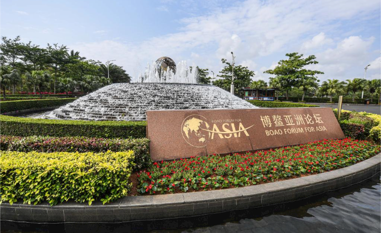
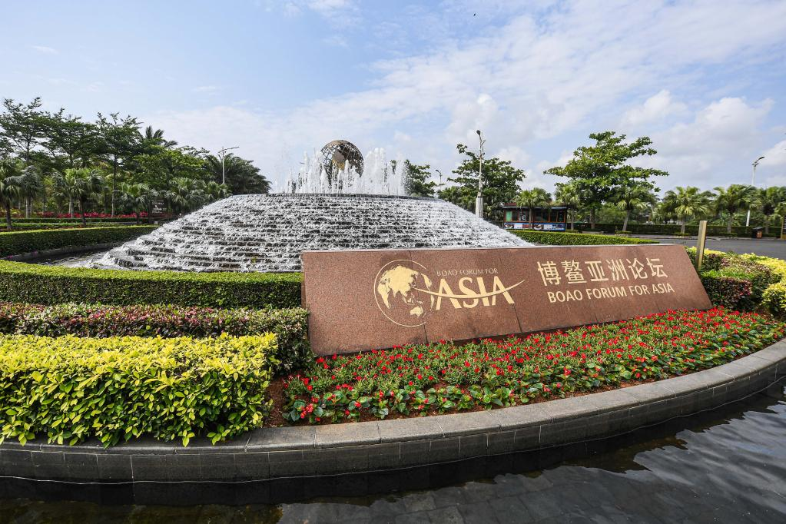
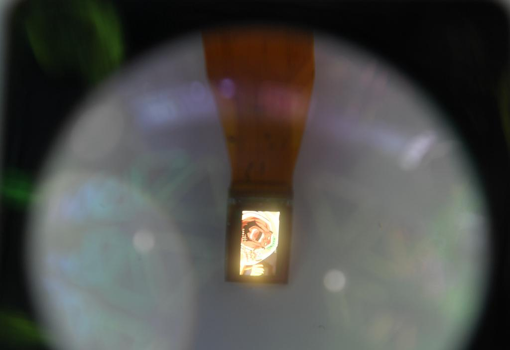

马来西亚专家：“一带一路”合作疫后大有可为
新华社吉隆坡4月20日电（记者林昊 郁玮）马来西亚新亚洲战略研究中心主席翁诗杰日前接受新华社记者专访时表示，共同应对新冠疫情加深了中国与其他共建“一带一路”国家之间的情谊，随着中国经济率先复苏，“一带一路”合作有望在疫后经济复苏中发挥重要作用。
博鳌亚洲论坛18日发布的《亚洲经济前景及一体化进程》2021年度报告指出，面对疫情考验，“一带一路”建设展现出强大的韧性和活力，相关项目持续推进，合作成果亮点颇多，贸易和投资逆势增长。

这是4月8日拍摄的海南博鳌亚洲论坛国际会议中心。（新华社记者蒲晓旭摄）
翁诗杰表示，疫情暴发后，共建“一带一路”国家相互伸出援手，中国向多个国家派出医疗专家组，并提供新冠疫苗，加深了共建“一带一路”国家之间的情谊。“中方履行了让疫苗成为全球公共产品的承诺。”
在他看来，中国率先控制住疫情，实现经济复苏，进而借助共建“一带一路”等国际合作带动更广泛的经济复苏。
“中国是2020年唯一实现正增长的主要经济体，在疫后经济复苏中将发挥引领作用。同时，‘十四五’规划出台以及加快构建以国内大循环为主体、国内国际双循环相互促进的新发展格局有望为参与共建‘一带一路’国家提供巨大的市场。”翁诗杰说。
翁诗杰同时表示，“一带一路”国际合作内涵不断丰富，推进建设“健康丝绸之路”“数字丝绸之路”等领域的合作正当其时。
“共建‘健康丝绸之路’有望为全球健康领域的合作树立典范，”他说，“同时，考虑到数字经济将在疫后经济复苏中发挥重要作用，有必要进一步推动‘数字丝绸之路’合作。”
翁诗杰认为，中国在数字经济领域的发展可以为其他国家提供参考。“中国通过发展数字经济释放出巨大潜力，在疫情影响持续背景下，这一领域将是经济全球化发展的下一个主要推手。”

这是2020年9月6日在服贸会拍摄的全彩虚拟现实数字光场芯片模组。（新华社记者张晨霖摄）
翁诗杰还表示，“一带一路”沿线多为发展中国家，面临着在发展经济与保护环境之间取得平衡的挑战。他认为，“一带一路”可以成为相关国家在应对气候变化方面开展合作的平台。
“中国通过立法、植树造林等方式在保护环境方面取得了不少成功经验，可以为共建‘一带一路’伙伴提供有益借鉴。”翁诗杰说。
新华社国际部制作
新华社国际传播融合平台出品